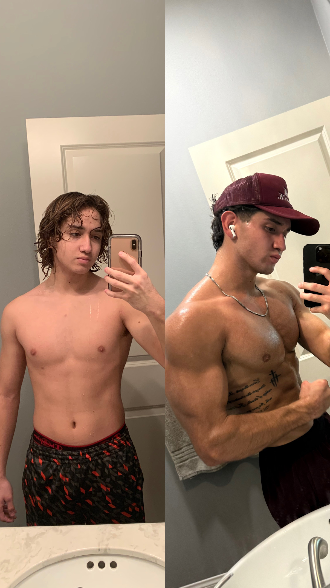
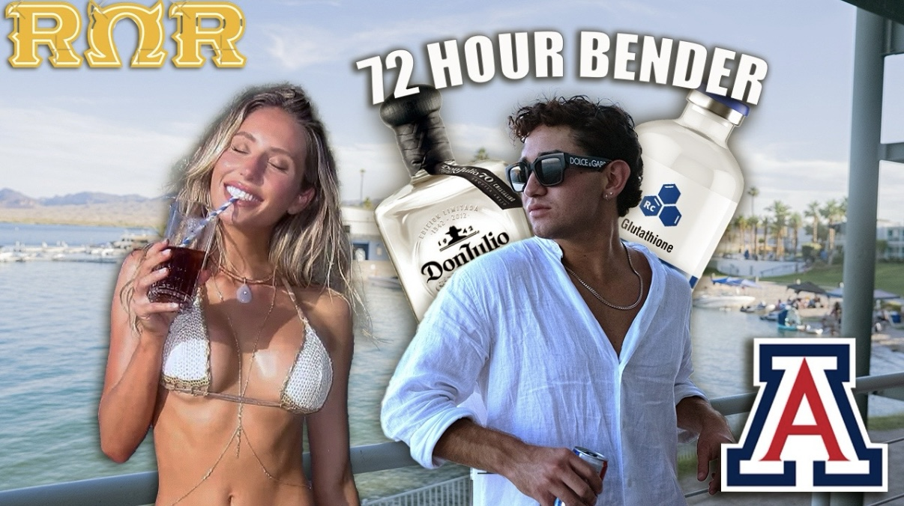
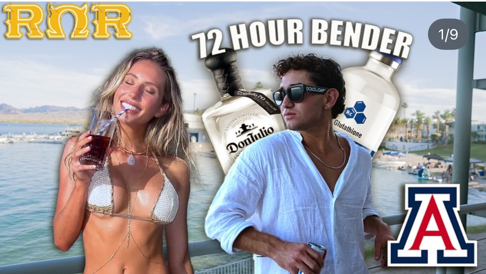
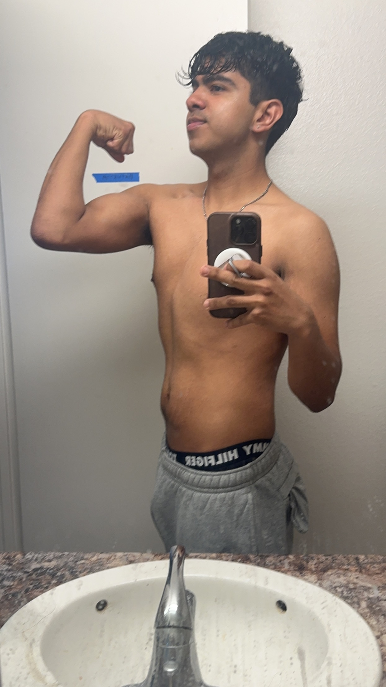
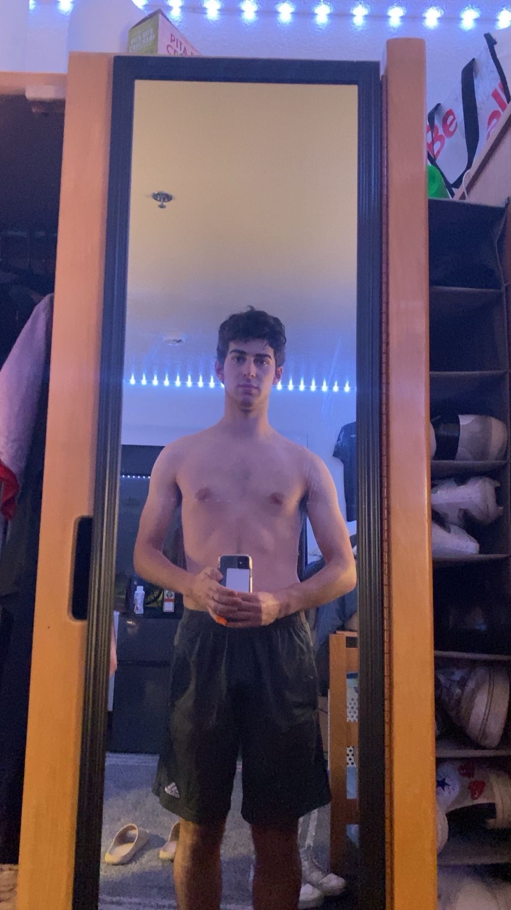
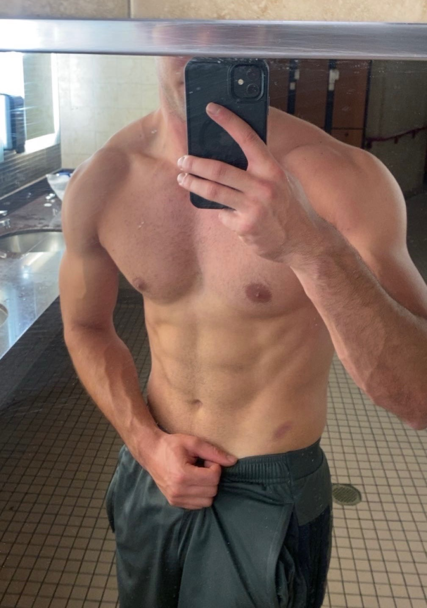
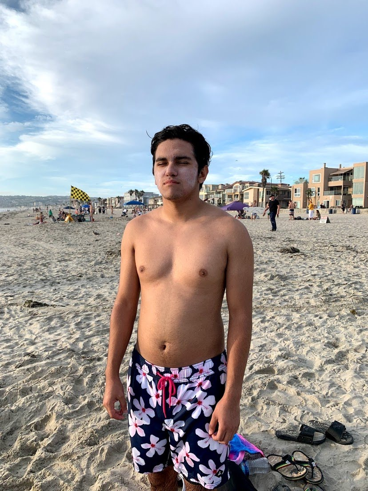
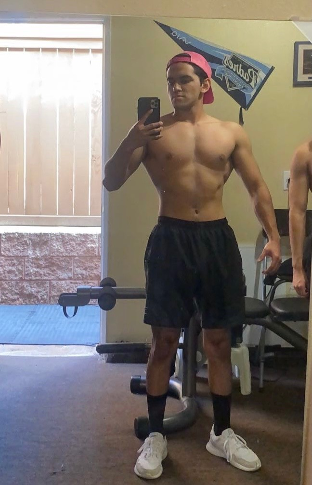
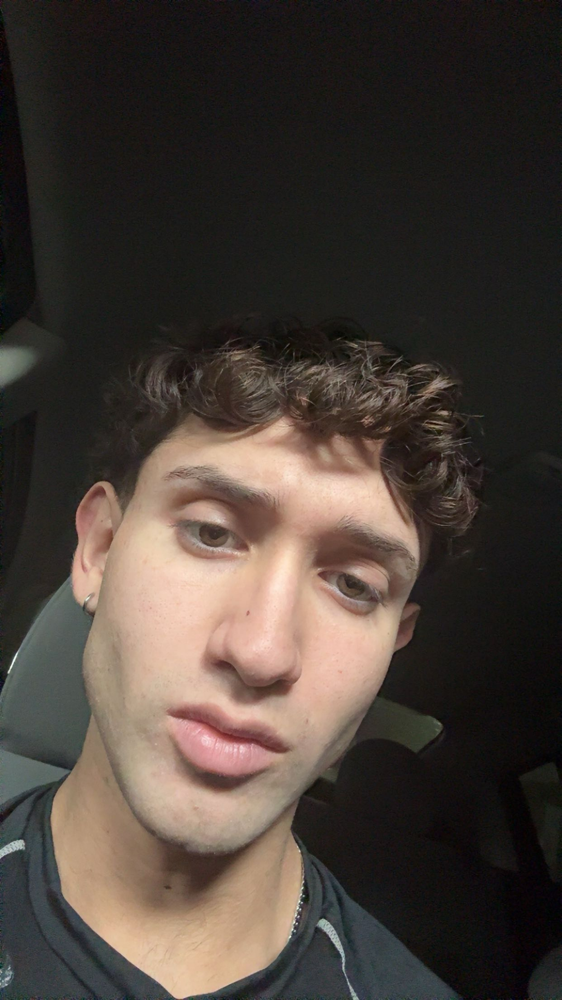
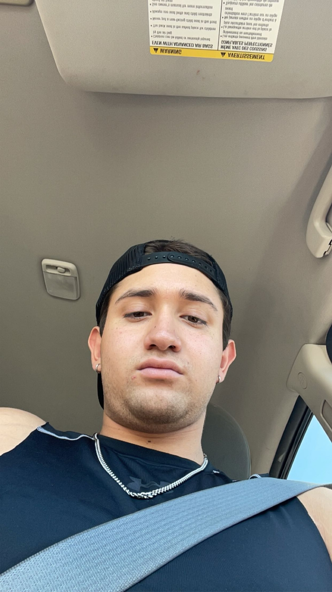

Jaihden-owned
Own transformation / proof asset
This is strong proof, but it may already be represented in the current hero slider. The ratio is tall and split-screen, so it is not automatically ideal for a full hero slide.

CCB5E3F1-3F41-4E68-A736-886DA9DB749C.JPGBest use: proof/transformation carousel, not necessarily the top hero because of sizing and crop risk.
- Recommendation: keep this as a proof/transformation slide or supporting proof card unless Jai specifically wants it as the hero image.
- Need to compare against the existing current transformation slide before replacing anything.
YouTube / personality
"More than a coach" final thumbnail
This is the actual higher-quality thumbnail added after the first intake pass. It should replace the low-res YouTube/personality slide image.

IMG_0527.jpgSite use: replaces the "More than a coach" / YouTube slide image.

IMG_1972.JPGKeep as reference only.
Confirmed client
Alex transformation
Confirmed by folder review notes: IMG_2737.JPG and IMG_1290.HEIC
belong to Alex's transformation.

IMG_1290.HEIC

IMG_2737.JPG
- Still needed before publishing: result detail, timeframe, and approved quote or caption.
Confirmed client
Ale transformation
Confirmed note: the first transformation with the skinny white client is Ale. These are grouped as Ale unless Jai later removes one of the files.

IMG_0592.JPG

IMG_2669.JPEGNote: face is cropped, so confirm this exact crop is approved.
- Still needed before publishing: result detail, timeframe, and approved quote or caption.
Confirmed client
JeZai transformation
Confirmed note: the last transformation is JeZai. These are grouped as JeZai based on the remaining final transformation files.

IMG_3774_Original.JPG

IMG_9119_Original.JPG
- Still needed before publishing: result detail, timeframe, and approved quote or caption.
Lower priority
Casual Jaihden selfies
These feel more casual and less useful for the current premium homepage surface. They may be useful for social texture later, but I would not prioritize them for the hero.

IMG_2401.JPG

IMG_4503.JPG
Reply needed
Questions for Jai
- For Alex, Ale, and JeZai: confirm the exact result detail, time period, and approved quote/caption.
- Confirm whether
IMG_0527.jpgis approved as the final YouTube / "More than a coach" thumbnail. - Should Jaihden's own before/after composite stay in the transformation carousel, replace the current crop, or be skipped because of ratio/crop?
- Are any of the casual selfies meant for the site, or were they just extra reference?